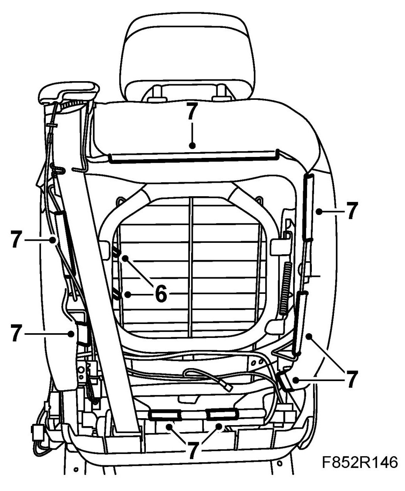
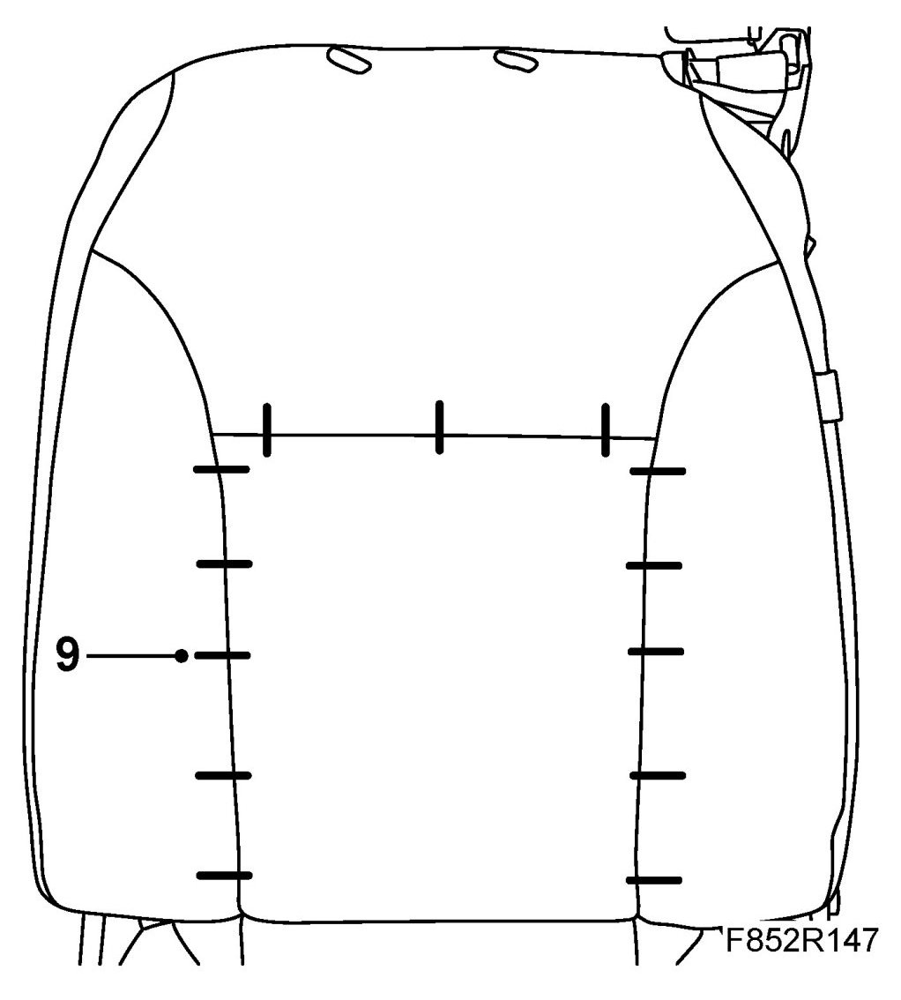
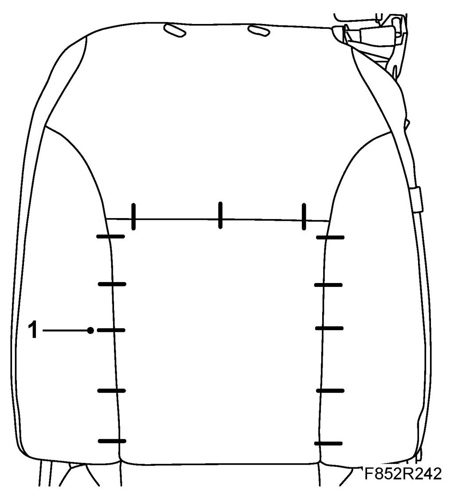

Backrest Trim, Front Seat, CV
Backrest Trim, Front Seat, CV
To remove
1. Open the hood.
2. Remove the head restraint supports.
3. Fold down the backrest.
4. Remove the seat cover.
5. Remove the rear lower cover from the front seat.
6. Cut the cable tie holding the fixing to the spring mat on the rear of the upholstery.

7. Remove the trim strips.
8. Remove the backrest upholstery and cushion.
9. Remove the fixing clips from the upholstery. Remove the seat trim.

To fit
1. Place the seat trim on the foam cushion. Fit the fixing clips to the upholstery. 84 71 062 Fitting kit, upholstery clips.

2. Fit the trim strips.
3. Fit the upholstery to the spring mat with a cable tie.
4. Fit the lower rear cover.
5. Fitting rear seat cover.
6. Fold back the backrest.
7. Fit the head restraint supports.
8. Close the hood.